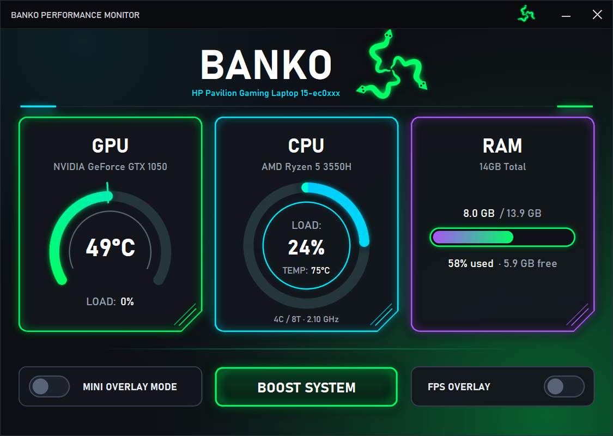

NVIDIA, AMD & Intel Arc Gauge
Streams NVIDIA metrics from a persistent nvidia-smi pipe and falls back cleanly to Win32_VideoController and Windows GPU performance counters for AMD Radeon and Intel Iris/Arc GPUs.
Official open-source Windows 10/11 GPU & system performance utility by hankobanko391 — universal hardware monitor & tuner for HP, Dell, Lenovo, ASUS, Acer, MSI, and custom PCs. Track NVIDIA, AMD Radeon, and Intel Arc/Iris GPUs, CPU cores & clocks, and RAM with a gaming overlay and one-click Boost System.

Streaming telemetry runs on a single background thread with suppressed console windows (CREATE_NO_WINDOW) and cached gauge frames so BANKO stays lean.
Streams NVIDIA metrics from a persistent nvidia-smi pipe and falls back cleanly to Win32_VideoController and Windows GPU performance counters for AMD Radeon and Intel Iris/Arc GPUs.
Auto-detects your PC manufacturer and model across HP, Dell, Lenovo, ASUS, Acer, MSI, and custom builds while tracking CPU load, core/thread count, GHz clock speed, and temperature.
Displays installed RAM capacity, exact used vs. total gigabytes, percentage consumed, and remaining free memory in real time.
Shrinks the dashboard into a compact, draggable, semi-transparent always-on-top corner bar showing GPU, CPU, and RAM at a glance.
Activates Ultimate / High Performance power plan, trims working sets and idle bloat, applies DirectX High-Performance GPU preferences, and tunes DNS/TCP latency.
Toggles a click-through, always-on-top corner FPS readout powered by Windows DWM composition timing.
No installer wizard, no background service, and no account sign-in. Download the standalone executable and launch.
Grab the standalone Windows 64-bit binary (BANKO.exe, ~18.5 MB) from the official v2.0.0 GitHub Releases page and verify its SHA-256 checksum below.
Everything—including the custom Pillow-rendered triple-snake emblem and fonts—is bundled directly inside the executable.
Right-click and choose Run as administrator if you want Boost System to also purge the Windows standby memory list.
Confirm your downloaded executable matches the official SHA-256 hash published directly from this repository.
Official standalone binary: BANKO.exe (v2.0.0, 19,428,602 bytes / ~18.5 MB)
39BFEB75FB8B69F30782FCF75D7C72CE3454F615DC26B2E2F1E915A75464A3A1
Verify locally in Windows PowerShell:
Get-FileHash -Algorithm SHA256 .\BANKO.exe
Open-source standalone binaries without a paid Authenticode certificate trigger SmartScreen on first run. Click More info then Run anyway, or inspect and build the Python source yourself.
No. BANKO.exe bundles Python 3.12, customtkinter, psutil, and pillow into a single standalone executable.
It switches Windows to Ultimate / High Performance power plan, trims process working sets and idle background bloat, configures DirectX High-Performance GPU preferences (DirectXUserGlobalSettings), and optimizes DNS/TCP settings. Elevated runs also flush the DNS cache and standby list.
Yes—clone the repository, run pip install -r requirements.txt, and run python main.py or bundle with PyInstaller.
Download the standalone Windows executable or inspect every line of code on GitHub.